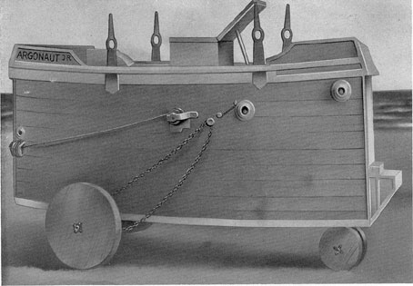

Modern Submarines
1C1. Holland's Plunger.
Antedating the efforts of Nordenfelt were the experiments of J. P. Holland of New
Jersey, who launched his first boat in 1875. Although his early models embodied
features that were discontinued as development progressed, many of his initial ideas,
perfected in practice, are in use today. Outstanding in importance was the principle
of submergence by water ballast, and the use of horizontal rudders to dive the boat.
However, not until 1895, did Holland, in competition with Nordenfelt, finally receive
an order for a submarine from the United States Government. The vessel was propelled
by steam on the surface and by electricity when submerged. This craft was named the
Plunger. The original craft was redesigned frequently during construction and finally
abandoned altogether in favor of a newer model already building in the Holland shipyard.
This was Holland's ninth submersible, but it was the first to be delivered to the
United States Government. It was delivered in 1900, and was the basic design of all
British submarines to follow.
1C2. Lake's Submarines.
Simon Lake, who began building submarines in 1894, designed them primarily with peacetime
uses in mind. His vessels could travel about on the sea bottom, and had an air lock
which permitted a passenger in a diving helmet to emerge from the hull to walk about
and explore. In fact, Lake used his vessels extensively in commercial salvaging operations.
His first model, the Argonaut, Jr. was solely an experimental one. It was built of
two layers of yellow pine with a sheet of canvas between them, and was operated by
hand.
It was followed in 1897 by the Argonaut, a cigar-shaped hull 36 feet long and powered
by a 30-horsepower gasoline engine. This craft could submerge to the bottom of a lake
or river and roll along at bottom on three wheels; or, for navigating. The wheels
could be raised and carried in pockets in the keel. In 1898 the Argonaut traveled
under its own power through heavy November storms from Norfolk to New York, and was
thus the first submarine to navigate extensively in the open sea. In 1906 Lake built
the Protector and sold it to Russia. After it had successfully passed various severe
tests there, Lake built a number of submersibles on contract for the Russian Government.

Figure 1-4. The ARGONAUT JR.
Figure 1-4. The ARGONAUT JR.